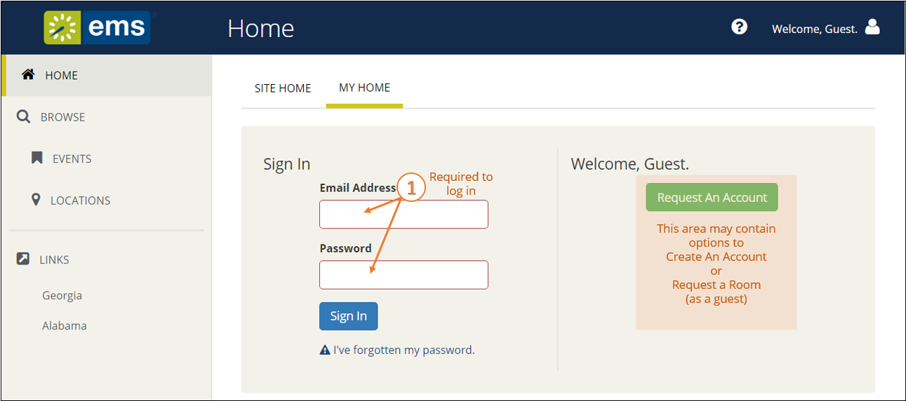
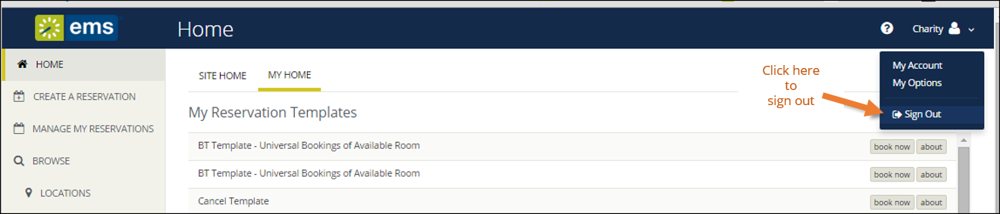

You can access EMS Web App through any standard Internet browser. This topic provides information on the following:
If your Administrator has enabled Guest Accounts, you can create a Guest Account using the green buttons to the right. When logged in through a Guest Account, you can request rooms; however, room requests must be approved by designated users in your organization.

